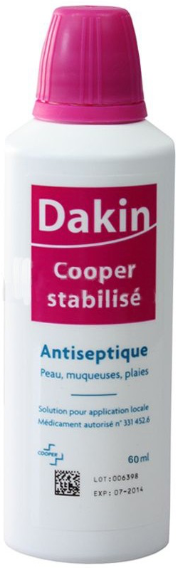
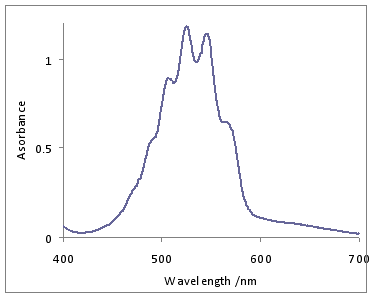
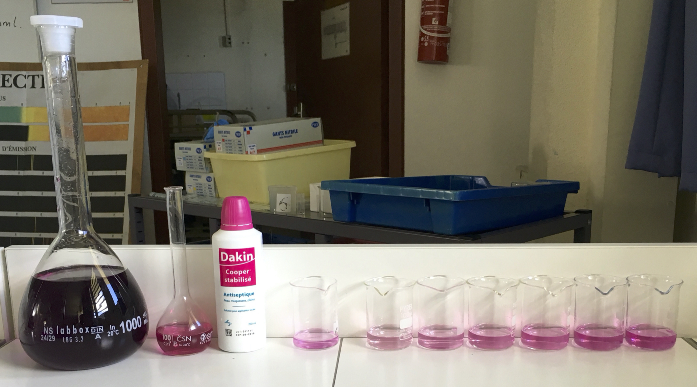
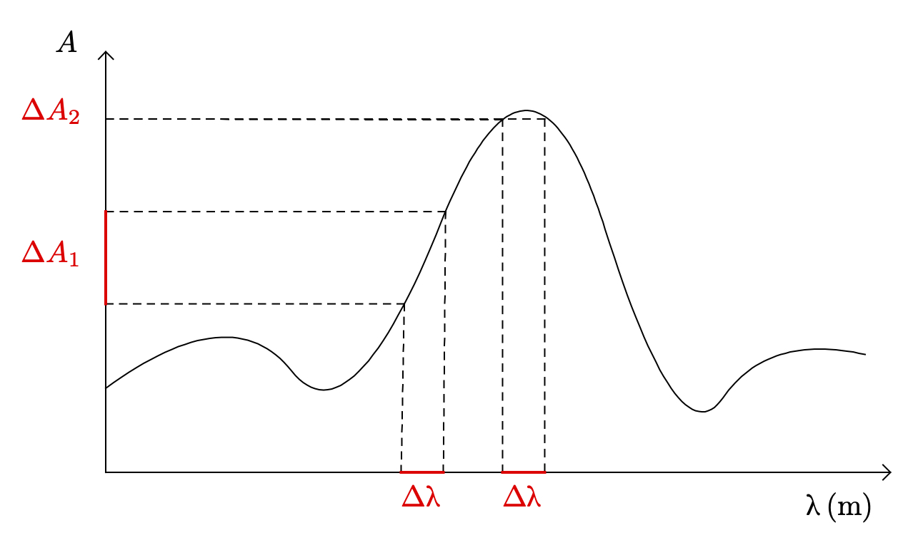
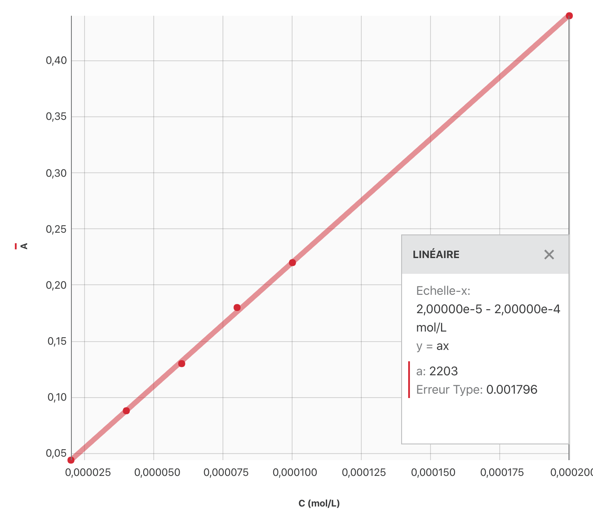

Documents
Eau de Dakin

La liqueur de Dakin (eau de Dakin) est une solution antiseptique utilisée pour le lavage des plaies et des muqueuses, de couleur rose et à l’odeur d’eau de Javel. Elle a pour avantage de ne pas être colorante (contrairement à l’éosine, par exemple) et de ne pas produire de sensation d’irritation à l’usage (contrairement à la Bétadine par exemple).
Lors de la Première Guerre mondiale, le chimiste d’origine britannique, installé aux États-Unis, Henry Drysdale Dakin met au point avec le chirurgien français Alexis Carrel un antiseptique (dont la substance active est l’eau de Javel) pour les plaies ouvertes ou infectées, dans le cadre des travaux de ce dernier sur le traitement des plaies de guerre.
L’eau de Dakin est à base d’hypochlorite de sodium $\ce{NaClO}$, en solution aqueuse, à 0,5 % de chlore actif (eau de Javel diluée) et de permanganate de potassium. Le permanganate de potassium sert à stabiliser la solution ; il faut cependant la conserver à l’abri de la lumière pour ralentir sa décomposition, cette dernière étant rapide : l’eau de Dakin n’est plus active environ 7 jours après ouverture du flacon.
L’étiquette d’un flacon d’eau de Dakin acheté dans le commerce indique que la masse de permanganate de potassium ajouté est de l’ordre de $\pu{0,01 g/L}$.
Permanganate de potassium
Le permanganate de potassium, découvert en 1659, est un sel inorganique de formule chimique $\ce{KMnO4}$ et de masse molaire $M = \pu{158,0 g/mol}$. Il est composé d’ions potassium $\ce{K^+}$ et d’ions permanganate $\ce{MnO_4^-}$. À l’état solide, il se présente sous la forme de cristaux violets. Lorsqu’il est dissous dans l’eau, il forme une solution aqueuse violette. C’est un composé sans odeur, et au goût amer.
Absorbance d’une solution de permanganate de potassium

Dosage colorimétrique
Doser une solution consiste à déterminer la concentration (molaire) d’une espèce chimique en solution. Un dosage colorimétrique est un type de dosage possible lorsque l’espèce chimique colore la solution et que la loi de Beer-Lambert peut être utilisée.
Conditions générales de réalisation d’un dosage colorimétrique
-
La loi de Beer-Lambert doit pouvoir être appliquée, la solution doit donc être diluée (la concentration de l’espèce chimique colorant la solution doit être inférieure à $\pu{1e-2 mol/L}$).
-
La coloration de la solution doit rester stable pendant la mesure de l’absorbance.
-
Il est nécessaire de réaliser, dans un premier temps, une courbe d’étalonnage à l’aide d’une échelle de teinte (solutions étalons) dont les concentrations encadrent la concentration recherchée.
-
La longueur d’onde du filtre choisi doit correspondre au rayonnement pour lequel l’absorbance de la solution est maximale.
Réalisation d’une échelle de teinte (solutions étalons)
Pour réaliser une échelle de teinte à partir d’une solution $S_0$ dans laquelle l’espèce chimique qui colore la solution est à la concentration molaire $C_0 = \pu{2,0e-4 mol/L}$, on peut préparer, dans des tubes à essai, 6 solutions de volumes $\pu{10 mL}$ et de concentrations :
| $S_0$ | $S_1$ | $S_2$ | $S_3$ | $S_4$ | $S_5$ | |
|---|---|---|---|---|---|---|
| Concentration ($\pu{mol/L}$) | $\pu{2,0e-4}$ | $\pu{1,0e-4}$ | $\pu{8,0e-5}$ | $\pu{6,0e-5}$ | $\pu{4,0e-5}$ | $\pu{2,0e-5}$ |

Objectif
L’objectif de cette séance est de vérifier que l’information sur la concentration massique en permanganate de potassium donnée par l’étiquette d’une solution de Dakin est correcte.
Travail
Résultats expérimentaux
- Absorbances des solutions étalons de permanganate de potassium :
| $S_0$ | $S_1$ | $S_2$ | $S_3$ | $S_4$ | $S_5$ | |
|---|---|---|---|---|---|---|
| Concentration ($\pu{mol/L}$) | $\pu{2,0e-4}$ | $\pu{1,0e-4}$ | $\pu{8,0e-5}$ | $\pu{6,0e-5}$ | $\pu{4,0e-5}$ | $\pu{2,0e-5}$ |
| Absorbance | 0,44 | 0,22 | 0,18 | 0,13 | 0,088 | 0,044 |
-
Absorbance de la solution de Dakin : $A = \pu{0,15}$.
-
L’exploitation des résultats expérimentaux nécessite le téléchargement du logiciel Graphical Analysis .
Questions
- Justifier la coloration d’une solution contenant du permanganate de potassium.
Réponse
Une solution de permanganate de potassium absorbe la lumière dans la partie verte du spectre. Comme nous percevons la couleur complémentaire de la couleur absorbée (lumière incidente supposée blanche - lumière absorbée), une solution de permanganate de potassium nous paraît magenta.
- On sélectionne, lors du dosage colorimétrique, la longueur d’onde $\lambda = \pu{530 nm}$. Justifier ce choix.
Réponse
Le document 1.3. nous apprend que « La longueur d’onde du filtre choisi doit correspondre au rayonnement pour lequel l’absorbance de la solution est maximale. » La longueur d’onde $\lambda = \pu{530 nm}$ est située dans la zone où l’absorbance est maximale.
Pourquoi se placer dans la zone du spectre dans laquelle l’absorbance est maximale ?
 Il est impossible de construire un filtre qui sélectionne une seule longueur d’onde. Dans la réalité, tous les filtres présentent une certaine largeur $\Delta \lambda$, c’est à dire qu’ils sélectionnent un ensemble de rayons dont les longueurs d’ondes sont comprises dans un intervalle $[\lambda_0 - \Delta \lambda ; \lambda_0 - \Delta \lambda + \Delta \lambda]$. Sur le graphique ci-dessus, on constate que pour une même largeur $\Delta \lambda$, l’incertitude sur la mesure de l’absorbance $\Delta A$ est d’autant plus petite que la longueur d’onde choisie est proche du maximum d’absorption.
- À partir de la valeur attendue de la concentration en permanganate de potassium, justifier l’intervalle des concentrations proposées pour l’échelle de teinte.
Réponse
- Selon le document 1.1, la concentration en permanganate de potassium dans la solution de Dakin est $C_m \approx \pu{0,01 g/L}$. Comme $C = \dfrac{C_m}{M}$, $C= \dfrac{\pu{0,01 g/L}}{\pu{158,0 g/mol}} = \pu{6e-5 mol/L}$.
- Dans le document 1.3, on apprend que « Il est nécessaire de préparer des solutions étalons dont les concentrations encadrent la concentration recherchée. Les concentrations en permanganate de potassium des solutions étalons sont comprises entre $\pu{2,0e-5 mol/L}$ et $\pu{2,0e-4 mol/L}$, elles respectent donc la condition imposée.
Pourquoi faut-il que les concentrations des solutions étalons encadrent la concentration inconnue
L’expérimentation ne nous permet de conclure sur le caractère linéaire de la relation entre l’absorbance $A$ et la longueur d’onde $\lambda$ que pour les valeurs des concentrations testées. Aller au-delà de ce que l’on constate s’appelle effectuer une prédiction, ce qui est totalement différent de notre travail.
- Indiquer le protocole permettant de réaliser chacune des solutions étalons (échelle de teinte) à partir de la solution mère (verrerie à utiliser, volume de solution mère à prélever, …).
Réponse
- Dans le cours nous avons démontré que $V_p = V_{\text{fille}}\ \dfrac{C_{\text{fille}}}{C_{\text{mère}}}$.
Pour préparer $V_{\text{fille}} = \pu{10 mL}$ de chacune des solutions filles, il faut donc prélever dans la solution mère $S_0$, pour obtenir les concentrations demandées, les volumes :
| $S_0$ | $S_1$ | $S_2$ | $S_3$ | $S_4$ | $S_5$ | |
|---|---|---|---|---|---|---|
| Concentration ($\pu{mol/L}$) | $\pu{2,0e-4}$ | $\pu{1,0e-4}$ | $\pu{8,0e-5}$ | $\pu{6,0e-5}$ | $\pu{4,0e-5}$ | $\pu{2,0e-5}$ |
| $V_p$ (mL) | 10,0 | 5,0 | 4,0 | 3,0 | 2,0 | 1,0 |
Manipulations
- On prélève à l’aide d’une pipette jaugée (préférable) ou d’une pipette graduée (si pas de pipette jaugée pour le volume en question) le volume $V_p$ de solution mère.
- On introduit le volume $V_p$ de solution mère dans une fiole jaugée de volume $\pu{10 mL}$.
- On complète avec de l’eau distillée, si nécessaire, jusqu’au trait de jauge.
- Mettre en œuvre un raisonnement permettant de vérifier que la concentration massique en permanganate de potassium d’une solution de Dakin est bien celle annoncée sur l’étiquette.
Réponse
- Choisir l’intervalle des concentrations des solutions étalons.
- Préparer les solutions étalons.
- Mesurer l’absorbance de toutes les solutions étalons.
- Établir la courbe d’étalonnage et réaliser la modélisation.
- Mesurer l’absorbance de la solution de Dakin.
- Utiliser la courbe d’étalonnage pour en déduire la valeur de la concentration en permanganate de potassium de la solution de Dakin.
Courbe d’étalonnage

Modélisation
Il s’agit de trouver la fonction mathématique qui le mieux le comportement des mesures expérimentales.
Ici, tous les points semblent appartenir à une même droite. De plus, on cherche à appliquer la relation de Beer-Lambert qui postule une proportionnalité entre $A$ et $C$. On modélise donc les résultats par une fonction linéaire. On obtient $A = k\, C$ avec $k=\pu{2203 L/mol}$.
Détermination de $C_{\text{Dakin}}$
Les conditions expérimentales étant identiques, on peut utiliser la courbe d’étalonnage (et la fonction obtenue) pour déterminer la concentration en permanganate de potassium dans la solution de Dakin.
$A_{\text{Dakin}} = k\, C_{\text{Dakin}} \leftrightarrow C_{\text{Dakin}} = \dfrac{A_{\text{Dakin}}}{k}$
A.N. $C_{\text{Dakin}} = \dfrac{\pu{0,15}}{\pu{2203 L/mol}} = \pu{6,8e-5 mol/L}$.
La concentration trouvée correspond bien à celle annoncée dans le document 1.1